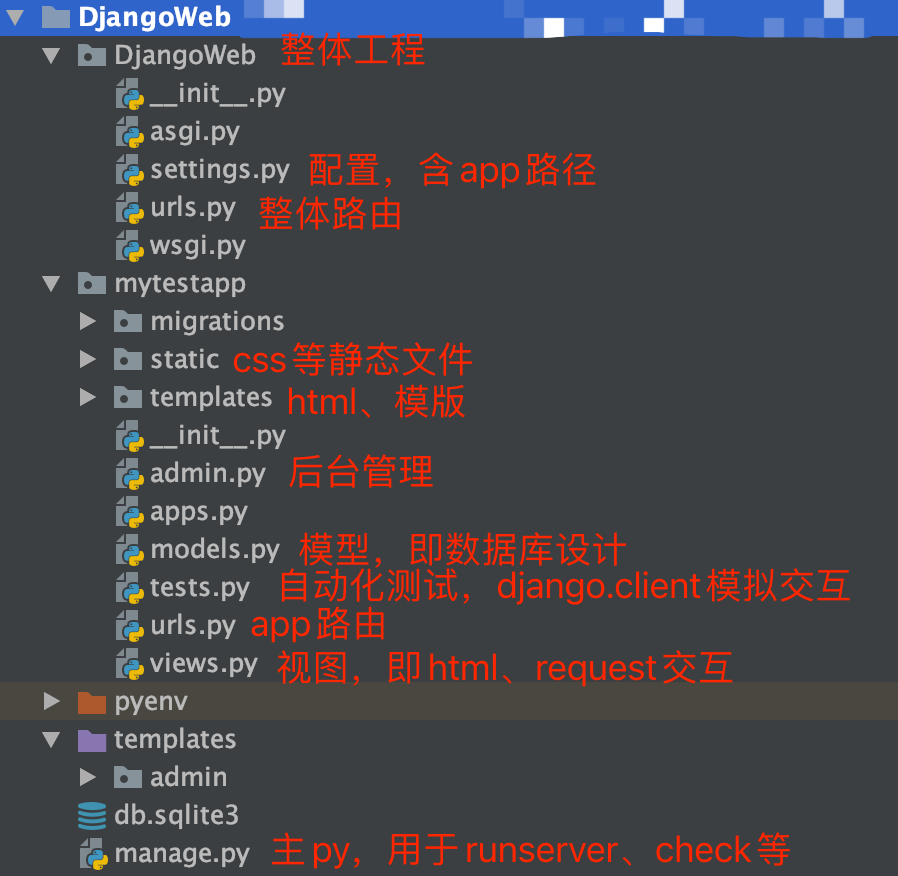
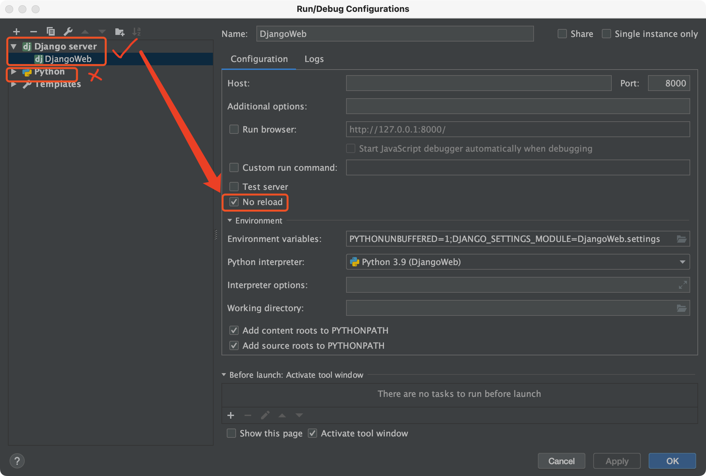
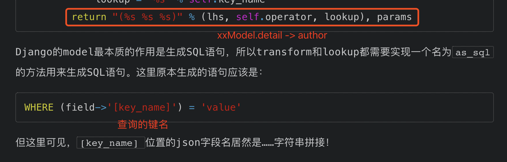
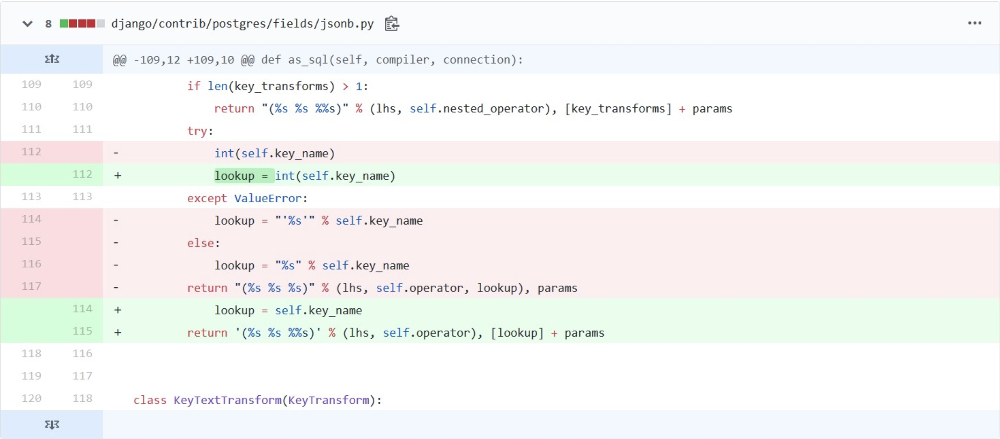
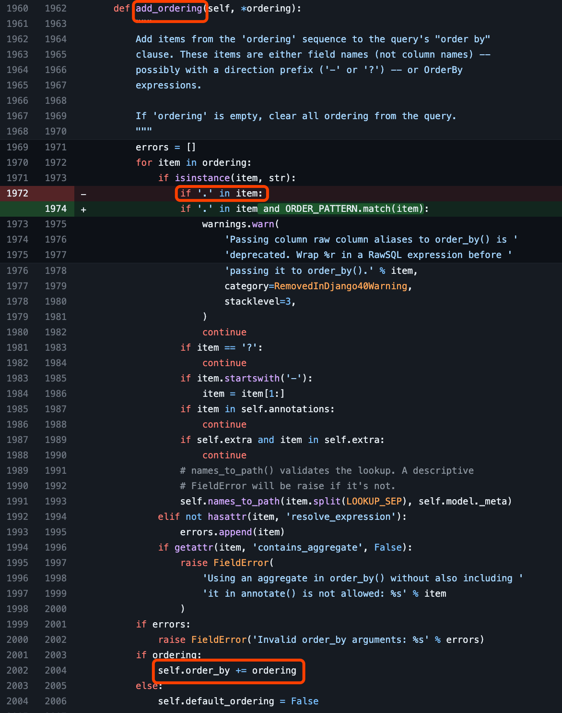

Django 框架和漏洞学习
遵循MVC框架（Model，数据模型，后端数据库和处理；View，接受请求，处理Model，渲染；C：模板）
0x1 搭建
1、直接使用pycharm进行创建，create Django 项目，在搭建过程中，运行python manager.py runserver，出现NameError: name 'os' is not defined错误，解决方式是根目录的setting.py中主动import os，重新runserver即可；
2、子应用中有URLconfs，通过include(module)进行引用
0x2 重要文件
目录树
django-admin
manage.py：包含项目设置，setdefault 项目名.settings
settings.py：项目具体设置，其中INSTALLED_APPS含appName
- Model:最本质的作用是生成SQL语句
常用命令
1 | python manage.py runserver |
1 | 模型，数据库结构设计和附加的其他元数据。（需要setting.py进行app注册） |
0x3 重要函数
path
path(route, view,kwargs,name)
1 | urlpatterns = [ |
- route：路由，谁去匹配url
- view：寻找指定的view，调用该函数，传入HttpRequest对象作为第一个参数
0x4 CVE
Django漏洞的poc可参考修复版本的test
1、V<2.0.8 任意URL跳转漏洞（CVE-2018-14574）
1）漏洞成因
根据网上漏洞成因分析，找到关键字词字符串grep -r "CommonMiddleware" ./，定位到/middleware/common.py的class CommonMiddleware用于补全url路径，其中def process_request的return self.response_redirect_class(redirect_url)即HttpResponsePermanentRedirect重定向url时没有过滤绝对路径，导致任意url跳转。
2）利用方式
若1，则2需成立，那么分支要进入3，即url最后没有斜杠slash；同时301跳转，构造的path需要绝对路径，即http://host//new_path
3）利用条件
版本（默认使用该中间件且APPEND_SLASH默认为True）
4）修复
调用escape_leading_slashes(new_path)函数，去掉多余的反斜杠
5）xray poc
虽然xray官方说已经集成在30x的功能中，但实测并未检测到该漏洞，因此自己编写了poc
1 | name: poc-yaml-cve-2018-14574-open-redirect |
2、postgresql-JSONField/HStoreField SQL注入漏洞（CVE-2019-14234）
1）环境搭建
django 2.2.3 + postgresql 14.7 + pycharm 2018
Note:
Pycharm的Django版本与漏洞复现版本不一致 ->
pip install Django==xxxError:
- pycharm：
Error encountered when performing Introspect database testdb schema public (details): ERROR: column t.relhasoids does not exist 位置：135.-> 解决：pycharm database -> 有个🔧的图标 -> options -> 勾选”Introspect using JDBC metadata” - admin后台登入时
[AssertionError: database connection isn't set to UTC](https://stackoverflow.com/questions/68024060/assertionerror-database-connection-isnt-set-to-utc)-> 解决：pip install psycopg2==2.8.6orpip install psycopg2-binary==2.8.6
- pycharm：
导入json数据：
python manage.py loaddata collection.json(collection.json与manage.py在一个目录下)Pycharm debug 断点不生效：参考网上的教程，debug后不在breakpoint处stop，折腾半天，发现是项目采用 Pycharm 的 DjangoServer 运行，直接下断点调试即可，不需要新建 python configuration。
这个问题折腾了一晚上……
2）漏洞分析
ref：
https://www.leavesongs.com/PENETRATION/django-jsonfield-cve-2019-14234.html
https://www.cnblogs.com/sijidou/p/13121288.html
（1）漏洞成因
postgresql 的 JsonField，transform “键” 去lookup value 时，键直接拼接在where 语句中。
（2）利用
“控制查询的键”
Note：
p神blog里所谓的django admin 具有 “用户控制queryset的查询键名”，在django/contrib/admin/views/main.py402行。
（3）修复
Key_name 用 数组表示，则a’b -> [‘a’,’b’] (postgresql 特性)
3、Oracle-GIS-tolerance SQL注入漏洞（CVE-2020-9402）
参考这篇文章。
但是根据官方修复其实可以很明显看到漏洞存在的位置 -> GIS功能的tolerance可控；并且根据test.py可以得到payload->闭合右括号。
修复：用Value()包含参数，去识别是否是int
4、QuerySet.order_by() SQL注入漏洞（CVE-2021-35042）
Django内置了ORM框架，从数据库查询出来的结果是一个QuerySet合集。其中的order_by方法，会将查询出来的结果按照某字段的值，由小到大或由大到小进行排序，漏洞就出现在add_ordering的时候：https://github.com/django/django/commit/a34a5f724c5d5adb2109374ba3989ebb7b11f81f。
漏洞原理是Django对数据的容忍度过高导致当识别table.column时，未进行恶意输入的处理，导致直接执行line_1980 continue，跳过后面的列检查，直接执行到line_2002 进行orderby的拼接。
官方的修复方法是增加if '.' in item and ORDER_PATTERN.match(item)，其中ORDER_PATTERN = _lazy_re_compile(r'[-+]?[.\w]+$')，即当table.col符合严格的格式时，才接收和处理。
ref：https://xz.aliyun.com/t/9834
5、Trunc(kind) and Extract(lookup_name) SQL注入漏洞（CVE-2022-34265）
漏洞存在于Django ORM日期函数Trunc、Extract的时间参数。和之前几个sql漏洞一样，没有进行过滤，直接sql语句拼接导致漏洞执行。
ref：https://xz.aliyun.com/t/11628#toc-2
漏洞本身的复现和调试与前几个sql漏洞差别不大，需要注意的是，由于Django支持非常多的数据库，不同数据库下漏洞的poc、是否能利用是不一样的。
6、postgresql-StringAgg SQL注入漏洞（CVE-2020-7471）
使用了StringAgg聚合函数，用户可控其delimiter参数进行查询时，在其位置注入SQL语句。
该漏洞复现可参考前几个漏洞，该漏洞vulhub没有，自己提交了pr：https://github.com/vulhub/vulhub/pull/424